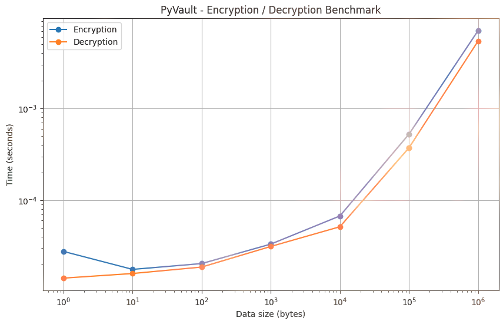

🔑 Générer une clé
Une clé Fernet est créée et écrite dans key.txt. C'est elle qui chiffre et déchiffre tout le reste.
Projet en cours de développement · v0.2.0-dev
▄▄▄▄▄▄ ▄▄▄ ▄▄
█▀██▀▀▀█▄ █▀██ ██▀▀ ██ █▄
██▄▄▄█▀ ██ ██ ██▄██▄
██▀▀▀██ ██ ██ ██ ▄▀▀█▄ ██ ██ ██ ██
▄ ██ ██▄██ ██▄ ██ ▄█▀██ ██ ██ ██ ██
▀██▀ ▄▄▀██▀ ▀███▀▄▀█▄██▄▀██▀█▄██▄██
██
▀▀▀
PyVault vient d'abord d'une envie toute simple : arrêter de me tromper sur les mêmes mots de passe partout. Au lieu de prendre un outil tout fait, je me suis dit que ce serait plus intéressant d'en construire un — et d'apprendre au passage comment marchent vraiment le chiffrement, les bases de données et tout le reste.
La base est là. Chaque fonction correspond à un vrai menu dans la CLI, donc tout ce qui est listé ici se teste en deux minutes.
Une clé Fernet est créée et écrite dans key.txt. C'est elle qui chiffre et déchiffre tout le reste.
Le mot de passe est chiffré puis rangé dans son propre fichier, par exemple secret/github.txt.
En donnant la clé et le nom du fichier, PyVault renvoie le mot de passe en clair.
Une liste de tous les fichiers enregistrés, et une recherche par nom quand on en a beaucoup.
Supprimer une entrée, ou tout exporter dans une archive zip d'un coup.
Un notebook Jupyter mesure le temps de chiffrement / déchiffrement selon la taille des données.
python main.py
S. [Stars Project] 0. [Generate Key (Obliged)] Q. [Leave]
1. [Add Password] 4. [Export (Zipfiles)]
2. [List Pswd] 5. [Delete Passwd]
3. [Decrypt Pswd] 6. [Search Website]
Choices : ▌
Je n'aime pas suivre des tutos sans rien retenir. Construire PyVault, c'est une façon de m'obliger à répondre moi-même à des questions du genre :
Comment on stocke un secret sans le laisser en clair sur le disque ?
Pourquoi une clé d'abord, puis un mot de passe maître ensuite ?
Comment passer d'une pile de fichiers à une vraie base de données ?
Et si un jour ça devient une interface web, par où on commence ?
Documentation du dépôt
Le contenu du fichier README, tel qu'il apparaît sur la page GitHub du projet.
🔐 PyVault
PyVault is a local password and secrets manager written in Python.
The goal of this project is to build a simple, private and secure way to store sensitive information locally while learning how encryption, databases and application architecture work.
⚠️ PyVault is currently under development.
I wanted to create a project that was more than a simple Python script.
PyVault is also a way for me to learn how different parts of a real application work together:
Instead of only following tutorials, I want to build the project myself, encounter problems, research solutions and document the entire process.
The architecture below shows both the current project and the features planned for the future.
flowchart TD
User["👤 User"]
PyVault["🔐 PyVault"]
CLI["🖥️ CLI
CURRENT"]
GenerateKey["🔑 Generate Key
CURRENT"]
AddPassword["🔐 Add Password
CURRENT"]
ListPasswords["📋 List Passwords
CURRENT"]
DecryptPassword["🔓 Decrypt Password
CURRENT"]
Fernet["🔒 Fernet Encryption
CURRENT"]
KeyFile["📄 key.txt
CURRENT"]
SecretFolder["📁 secret/
CURRENT"]
Search["🔎 Search Passwords
CURRENT"]
Delete["🗑️ Delete Password
CURRENT"]
Export["📤 Export Passwords
CURRENT"]
Tests["🧪 Unit Tests
CURRENT"]
Benchmark["📊 Benchmark
CURRENT"]
MasterPassword["🔑 Master Password
PLANNED"]
Vault["🔐 Vault System
PLANNED"]
SQLite["🗄️ SQLite Database
PLANNED"]
API["🌐 Local API
PLANNED"]
FastAPI["⚡ FastAPI
PLANNED"]
Web["🖥️ Web Interface
PLANNED"]
User --> PyVault
PyVault --> CLI
CLI --> GenerateKey
CLI --> AddPassword
CLI --> ListPasswords
CLI --> DecryptPassword
GenerateKey --> Fernet
GenerateKey --> KeyFile
AddPassword --> Fernet
Fernet --> SecretFolder
DecryptPassword --> SecretFolder
ListPasswords --> SecretFolder
CLI --> Search
CLI --> Delete
CLI --> Export
Search -.-> SQLite
Delete -.-> SQLite
MasterPassword -.-> Vault
Vault -.-> SQLite
API -.-> FastAPI
FastAPI -.-> Vault
Web -.-> API
Tests -.-> PyVault
Benchmark -.-> Fernet
CURRENT = already implemented
PLANNED = planned for a future version
PyVault/
│
├── commands/
│ ├── add.py
│ ├── decrypt.py
│ ├── delete.py
│ ├── export.py
│ ├── generate_key.py
│ ├── list.py
│ └── search.py
│
├── secret/ ← stores encrypted password files
│
├── tests/ ← unit tests
│
├── images/
│ └── benchmark.png ← encryption/decryption benchmark
│
├── notebooks/
│ └── benchmark.ipynb ← Jupyter benchmark
│
├── main.py
├── system_info.py
├── key.txt
├── .gitignore
├── LICENSE
└── README.md
PyVault currently uses Fernet from the cryptography library.
A key is generated with:
key = Fernet.generate_key()
The key is currently stored locally in:
key.txt
When adding a password, PyVault encrypts it before storing it:
fernet = Fernet(key.encode())
encrypted = fernet.encrypt(passwd.encode())
The encrypted password is then stored in a dedicated file inside the secret/ folder, one file per website:
secret/
└── github.txt
Example content of secret/github.txt:
gAAAAAB...
The password itself is not stored directly in the file.
⚠️ This is an early prototype. The current key management system is not considered secure enough for production use.
PyVault includes a benchmark using Jupyter Notebook to measure the performance of Fernet encryption and decryption.
The benchmark tests multiple data sizes, from a few bytes up to 1 MB, and performs multiple iterations for each size.
The results are visualized in the following graph:

The benchmark helps measure how encryption and decryption performance changes as the amount of data increases.
The benchmark notebook is located at:
notebooks/benchmark.ipynb
It can be used to experiment with PyVault's encryption system and compare future implementations.
Clone the repository:
git clone https://github.com/KirobotDev/PyVault.git
cd PyVault
Create a virtual environment:
python -m venv .venv
.venv\Scripts\activate
python3 -m venv .venv
source .venv/bin/activate
Install dependencies:
pip install -r requirements.txt
Start PyVault:
python main.py
You will see:
S. [Stars Project] 0. [Generate Key (Obliged)] Q. [Leave]
1. [Add Password] 4. [Export (Zipfiles)]
2. [List Pswd] 5. [Delete Passwd]
3. [Decrypt Pswd] 6. [Search Website]
Choices :
Choose:
0
PyVault will generate a Fernet key and save it to:
key.txt
Choose:
1
PyVault will ask for:
Enter your key please thanks... :
Enter name your website Example (github) :
Enter your password :
The password will be encrypted and stored in:
secret/<website>.txt
Choose:
2
PyVault will display all files stored in the secret/ folder, one per website.
Choose:
3
PyVault will ask for:
Enter your key :
Enter the file name example (github.txt) :
It will then display:
Your Password is [ your_password_here ]
Unit tests are available in the tests/ folder.
Run them with:
python -m unittest discover tests
The benchmark is available as a Jupyter Notebook.
Install Jupyter if necessary:
pip install jupyter
Start Jupyter:
jupyter notebook
Then open:
notebooks/benchmark.ipynb
The benchmark measures:
secret/)PyVault isn't only a software project.
I also want to document the process of building it.
The documentation will cover:
Idea
↓
First prototype
↓
Encryption
↓
Problems
↓
Research
↓
Solutions
↓
Security
↓
Testing
↓
Benchmarking
↓
Final application
The objective is to show what I learned, what went wrong and how the project evolved over time.
Current version: 0.2.0-dev
PyVault is currently an experimental project.
The project is actively being developed and its architecture may change significantly.
Contributions, suggestions and bug reports are welcome.
If you find a problem, feel free to open an issue.
For larger changes, please open an issue first to discuss the idea.
PyVault is released under the MIT License.
See LICENSE for more information.
xql
GitHub: https://github.com/KirobotDev
Built with Python 🐍
Learning by building.
Bac à sable interactif
Une vraie console, comme python main.py, qui tourne dans ton navigateur.
Tape les mêmes commandes. Le chiffrement est le vrai Fernet — ce que tu produis ici peut être déchiffré
par le PyVault en Python, et l'inverse. Les entrées sont enregistrées dans ce navigateur, comme le dossier
secret/.
0 Générer une clé1 Ajouter un mot de passe2 Lister les entrées3 Déchiffrer un mot de passe4 Exporter (zip)5 Supprimer une entrée6 Rechercher un sites Ouvrir le dépôt GitHubq Quitterhelp Aide · clear NettoyerLa suite pour PyVault
Tout ce qui traîne dans ma tête ou dans le cahier d'idées du dépôt, classé par ordre à peu près chronologique. Rien n'est garanti, c'est une liste vivante.
Aujourd'hui il faut taper la clé à chaque commande. Ce serait mieux que le programme retrouve tout seul key.txt au démarrage.
Les fichiers par site, ça marche, mais ça ne tient pas la route longtemps. Il faut penser à un format plus propre avec des métadonnées.
Le gros morceau : protéger le coffre avec un mot de passe maître, au lieu d'une clé posée en clair sur le disque.
Un verrouillage après inactivité, et une protection contre les tentatives de mot de passe échouées.
Utiliser un vrai dérivé de clé (KDF) au lieu du simple key.txt qui traîne en clair.
Poser noir sur blanc contre quoi on protège, et comment. Ça m'aidera à faire les bons choix pour la suite.
Une vraie base pour remplacer le système de fichiers : modèles, champs chiffrés, validation et migrations.
Exposer PyVault via une API locale en FastAPI, avec authentification, histoire de pouvoir l'utiliser depuis d'autres outils.
Un tableau de bord pour tout gérer au lieu de la ligne de commande. Le grand projet à la fin.
CI/CD, revue de sécurité, documentation complète, et pourquoi pas un package sur le PyPI un jour.
idea/idea.mdLe vrai fichier d'idées du dépôt ne contient pour l'instant que trois lignes. Je les garde ici telles quelles :
japanese.Les suggestions et les bug reports sont les bienvenus. La meilleure façon de m'en parler, c'est d'ouvrir une issue sur le dépôt.
Ouvrir une issueDerrière le projet
PyVault, c'est mon projet d'apprentissage. Je m'appelle xql et je vois ce dépôt comme un terrain de jeu où je peux me planter sans conséquence — et justement, apprendre de mes erreurs.
L'idée de départ est bête : je voulais un endroit pour ranger mes mots de passe qui ne soit pas chez quelqu'un d'autre. Le chemin pour y arriver me fait toucher à pas mal de sujets (chiffrement, stockage, API, sécurité) que je n'aurais jamais abordés avec un simple tuto.
Le projet est en développement actif et l'architecture peut encore beaucoup bouger. Si ça t'intéresse, le mieux c'est de suivre la roadmap dans le README, ou de jeter un œil aux idées pour voir où je vais.